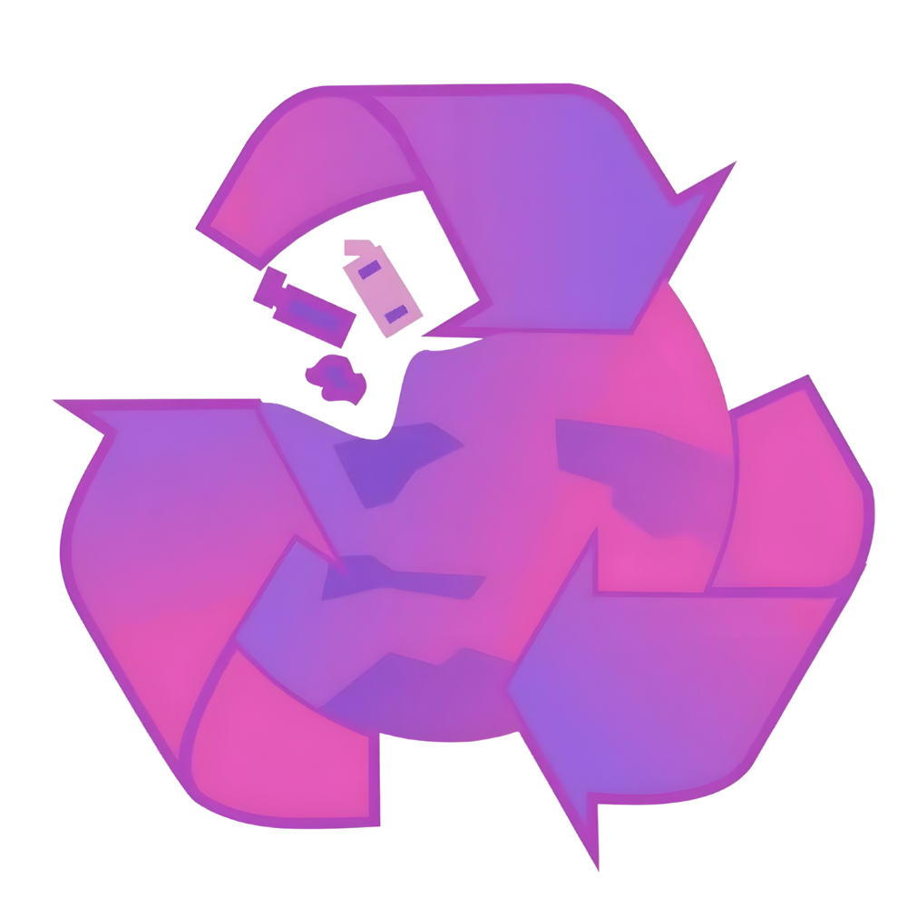
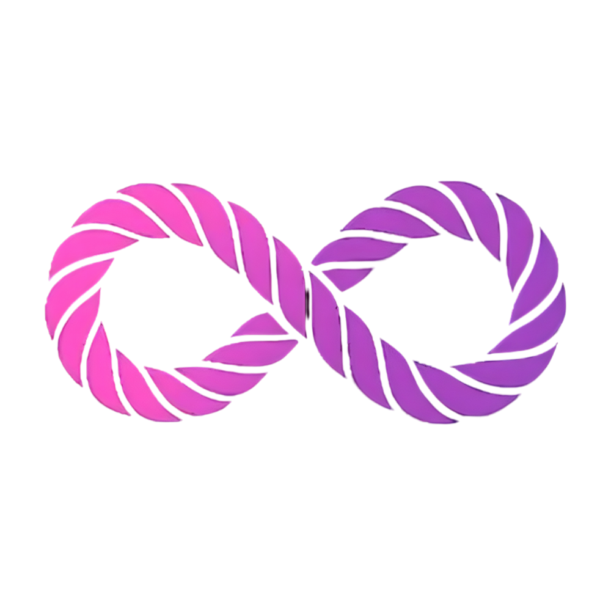

Lomba Kategori Regu

REACTION
REACTION merupakan salah satu perlombaan dalam 17th Galang Ceria. Perlombaan yang menantang peserta untuk mengolah limbah menjadi barang terapan dan bernilai guna.

STRING
STRING merupakan salah satu perlombaan dalam 17th Galang Ceria, perlombaan yang menguji keterampilan peserta dalam membuat miniatur burung cendrawasih menggunakan stik dan tali dengan simpul dan ikatan.

COVER
COVER merupakan salah satu perlombaan dalam 17th Galang Ceria, perlombaan yang mengajak peserta menyusuri rute tertentu dengan berbagai tantangan di setiap posnya.
SILENT
SILENT merupakan salah satu perlombaan dalam 17th Galang Ceria, perlombaan yang menguji pengetahuan dan kecerdasan peserta dalam bidang kepramukaan.